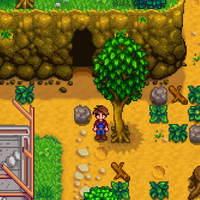
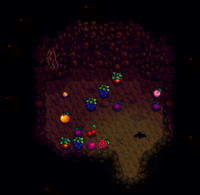

 Entrée de la grotte près de la
Serre.
Une fois que vous aurez accumulé data-sort-value="25000"> 25 000po de gains, Demetrius vous rendra visite à la La ferme le matin et vous informe qu'il souhaiterait utiliser la grotte pour y étudier des spécimens. Il vous donne le choix entre les chauve-souris à fruits (qui laissent des fruits dans la grotte) ou les champignons. Ce choix est permanent et ne peut pas être inversé.
25 000po de gains, Demetrius vous rendra visite à la La ferme le matin et vous informe qu'il souhaiterait utiliser la grotte pour y étudier des spécimens. Il vous donne le choix entre les chauve-souris à fruits (qui laissent des fruits dans la grotte) ou les champignons. Ce choix est permanent et ne peut pas être inversé.
Chauve-souris à fruits
 Intérieur de la grotte avec des
fruits laissée par des chauve-souris.
Les chauve-souris à fruits laissent différents fruits dans la grotte de votre ferme. C'est une bonne option pour produire des Produits artisanaux puisque cela vous permet d'obtenir régulièrement quelques fruits même hors saison. Ceci aide également à compléter le  Paquet Artisan dans le cellier durant la première ou la deuxième année, avant d'avoir assez d'argent pour acheter tous les Arbres fruitiers.
Paquet Artisan dans le cellier durant la première ou la deuxième année, avant d'avoir assez d'argent pour acheter tous les Arbres fruitiers.
Les fruits d'Arbres fruitiers font d'excellents cadeaux pour les villageois car ils sont des cadeaux universellement aimés, accessibles assez rapidement dans le jeu, et ne recquierent pas de cuisine. Offrir les fruits peut être la meilleure chose à faire en fin de jeu, plutôt que de produire des Produits artisanaux, les vendre, finir les Paquets, ou les manger pour gagner un peu d'énergie (même s'ils ne restaurent pas beaucoup de santé).
Les fruits trouvés dans la grotte peuvent être de n'importe quelle qualité (normal, argent, ou or). Si la profession Botaniste est choisie, les fruits pourront être de qualité iridium. Chaque fruit ramassé dans la grotte donnera au joueur 7 points d'expérience de Cueillette.
Champignons

Emplacements de champignons dans la grotte.
Six enmplacements seront ajoutés dans la cave où des champignons pourront pousser aléatoirement. Cinq différentes espèces peuvent pousser, y compris les 4 requises pour fabriquer l'Élixir de vie. Même si le Champignon commun, la Morille, et le Chanterelle sont les champignons les plus courants, ceci reste le meilleur moyen de fabriquer l'élixir aussi souvent que possible. Cela fait du choix des champignons une bonne option pour ceux qui aiment aller dans les Mines, d'autant plus que la plupart des champignons peuvent être difficiles à trouver autrement. C'est aussi un bon choix pour les joueurs qui ont fait pousser, ou souhaitent faire pousser les Arbres fruitiers et n'ont pas besoin des fruits laissés par les chauve-souris.
Les champignons de la grotte peuvent être récoltés tous les jours, mais jamais plus d'une fois par jour. Les six emplacements commenceront à en générer le lendemain matin après que Demetrius les ai installés, et ensuite chaque matin après la récolte. Si le joueur va dormir sans avoir récolté les champignons un jour de production sera perdu. Le temps de pousse est de 3000 minutes, la production va donc varier en fonction du temps que vous passez à dormir. Dormir juste après s'être réveillé produira des champignons à 11:00 le 2ème jour, allez dormir à minuit produira des champignons à 2:00 le 2ème jour. Ce qui signifie que vous ne pourrez pas récolter de champignons avant le 3ème jour du cycle, entraînant la perte d'un jour de production. Comme les récoltes, les champignons prêts à être ramassés le restent jusqu'à ce qu'ils soient récoltés.
Les champignons qui poussent dans la grotte sont toujours de qualité normale, même si la profession Botaniste est choisie. Récolter les champignons de la grotte ne donne au joueur aucun point d'expérience de Cueillette, et la profession Chasseur-cueilleur ne double pas les récoltes de champignons.